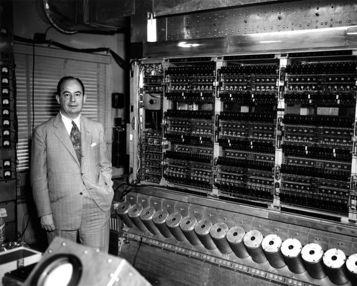
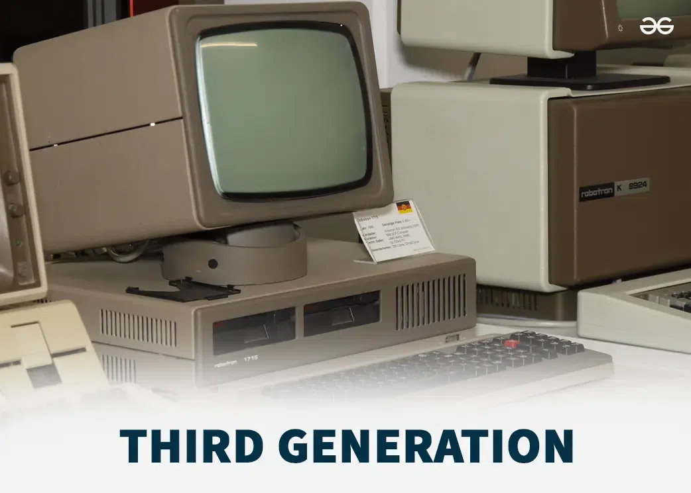
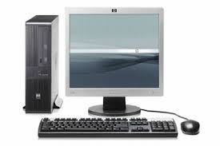
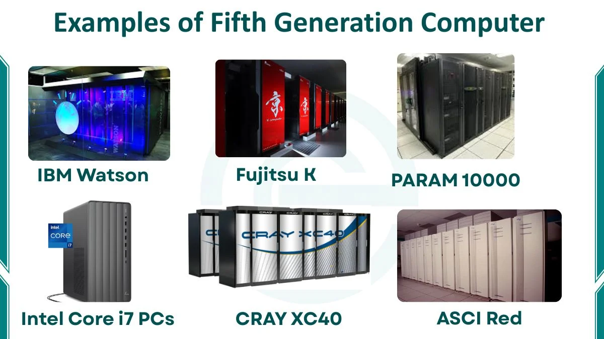

Period: 1940–1956 First-generation computers used vacuum tubes for electronic circuits and magnetic drums for memory. They were very large, expensive, produced a lot of heat, and used huge amounts of electricity. Programming was done in machine language using binary instructions. Examples include ENIAC and UNIVAC I

Period: 1956–1963 Second-generation computers used transistors instead of vacuum tubes. Transistors made computers smaller, faster, more reliable, and less power-hungry. Programming languages such as FORTRAN and COBOL became popular in this period. Examples include IBM 1401 and IBM 7090
Period: 1964–1971 Third-generation computers used integrated circuits, also called ICs or chips. An IC contains many electronic components on a small silicon chip, improving speed and reliability. Computers became smaller and more affordable, while keyboards and monitors became more common.

Period: 1971–Present Fourth-generation computers use microprocessors, which place the CPU on a single chip. This made personal computers possible and later led to laptops, tablets, and smartphones. Computers became widely available in homes, schools, offices, and businesses. Examples include the Apple II, IBM PC, and modern PCs

Period: Present and continuing Fifth-generation computers focus on artificial intelligence, machine learning, and natural-language interaction. They can recognize patterns, process speech or images, and make useful predictions from data. Examples include voice assistants, AI chatbots, smart robots, and recommendation systems.

| Generation number | Main Technology | Main features and improvement |
|---|---|---|
| First | Vacuum tubes | First large electronic computers |
| Second | Transistors | Smaller, faster, cooler, and more reliable |
| Third | Integrated circuits | Many components fitted onto one chip |
| Fourth | Microprocessors | Personal computers and portable computing |
| Fifth | Artificial intelligence | Computers that can learn, recognize patterns, and interact more naturally |